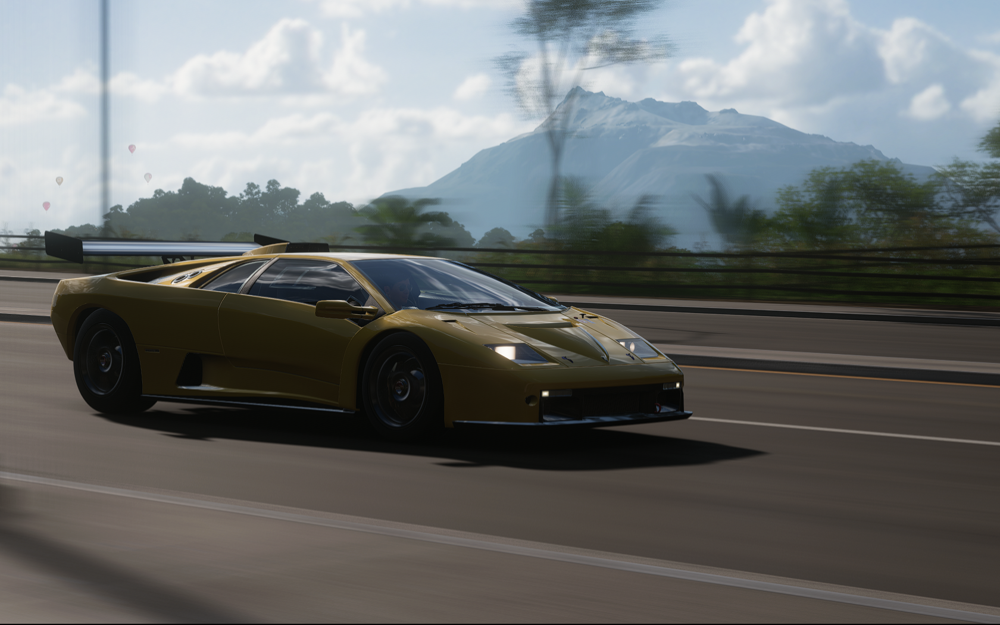
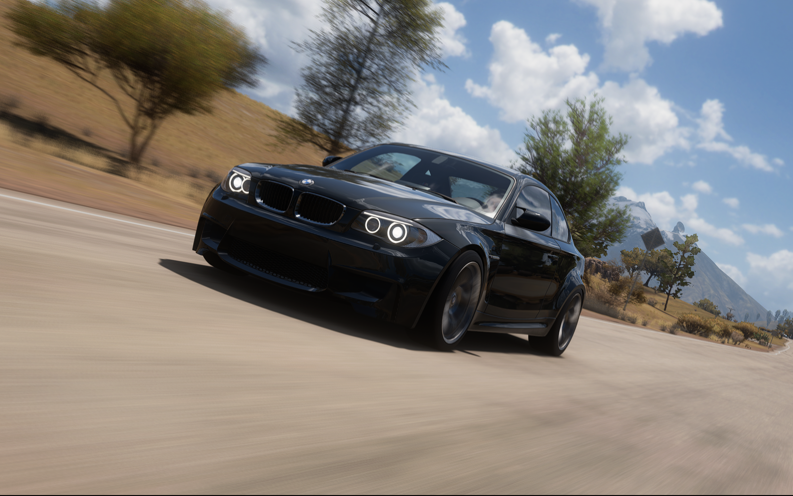
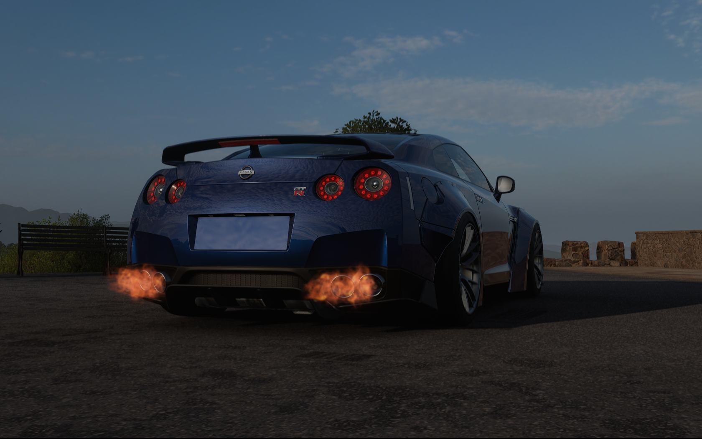
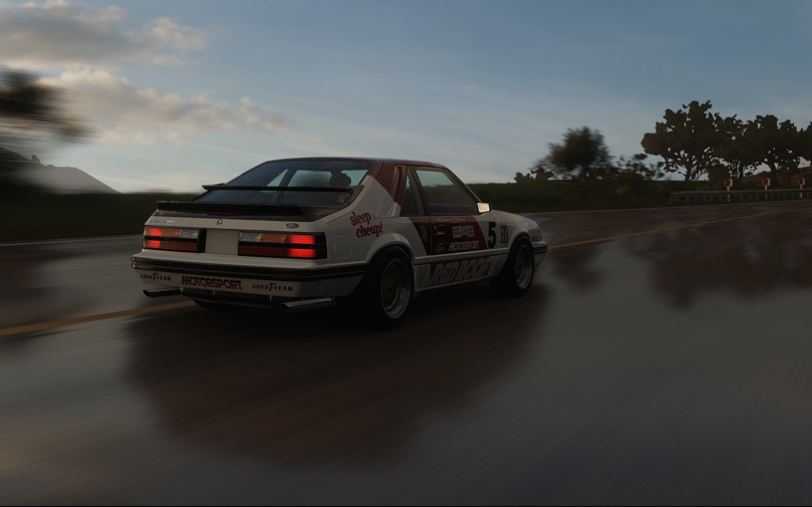

Főoldal
Animáció
Űrlap
Táblák
Galléria
Videó

1999 Lamborghini Diablo GTR
Bővebb információ az autóról.

2011 BMW 1 Series M Coupe
Bővebb információ az autóról.

2012 Nissan GT-R Black Edition
Bővebb információ az autóról.

1986 Ford Mustang SVO
Bővebb információ az autóról.